For the best experience, view these guides on Desktop or Tablet.
Jumping into a new game, let alone new MMO can be daunting - especially one as unique as Old School RuneScape. OSRS is a Sandbox MMO and is about adventure, self-discovery and most importantly: carving your very own path.
In this newspost, we'll be discussing everything to do with your settings and general tips before you explore, but if you're looking for what to do in Gielinor or how Combat works, then use the buttons below.
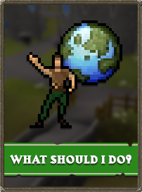
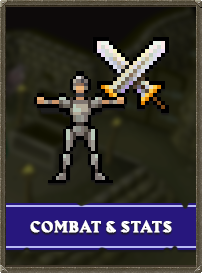
What's up first?
Well once you've created your account, your first decision is what client are you going to be using as there's a couple of different options on the Jagex Launcher:
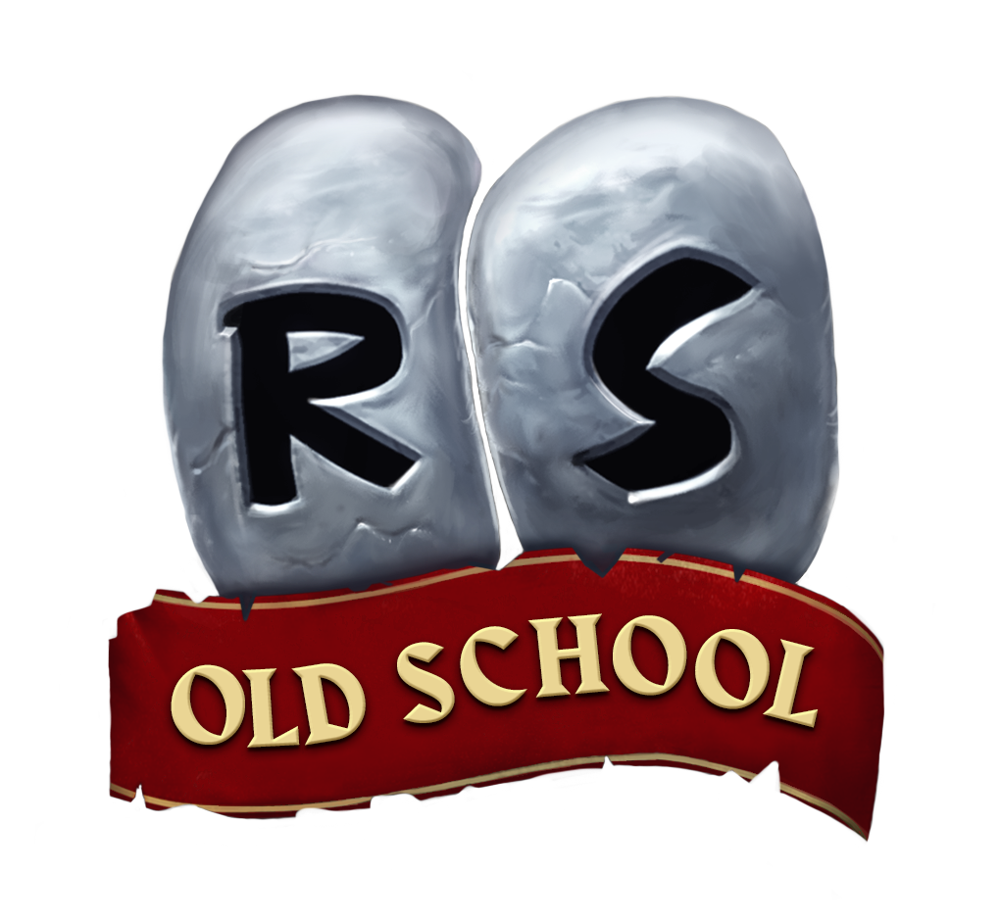 |
This is the core client, created by us and is the only one that is on both Desktop and Mobile (both Android & iOS). |
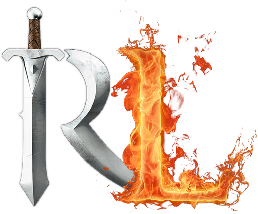 |
The client most used by players which offers a wide-range of options to help improve your experience through the use of Plugins, similar to add-ons in other MMOs! |
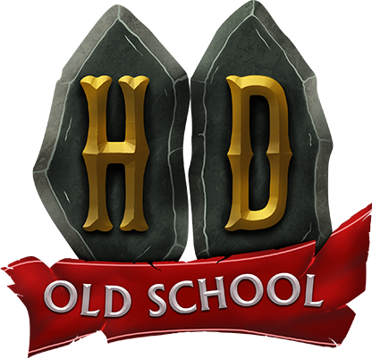 |
The second third-party client we support whose main feature is capturing the aesthetics of RuneScape from around 2010 alongside other gameplay enhancing features in the form of plugins! |
Gamemodes
So you're on tutorial island, but you keep hearing people saying Ironman Btw and you might be wondering "What the hell is even that?". Well fear not as we've broken the gamemodes down into their main principles.
Before we dive in, we'd like to clarify that you can ONLY choose your Ironman Status on Tutorial Island.
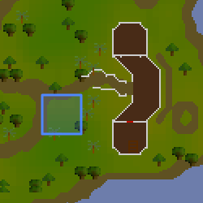
Visiting Paul, The Ironman Tutor who resides just outside the Magic Instructor's house will let you pick your mode.
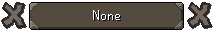 This is your standard, straight-forward account which means you can do everything and anything... unless you have some self-imposed restrictions. |
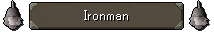 This gamemode means you stand alone. You won't be able to trade with other players, buy things off the Grand Exchange or pick their items off the ground. |
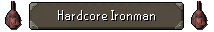 Why not take those restrictions above and give yourself one life as well? Your account WILL NOT be deleted if you die, you will just lose your status and continue as a regular Ironman. |
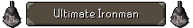 If you really want to push the boat out, this has the same restrictions as regular Ironman, but with the addition of not being able to use a Bank. NOT RECOMMENDED FOR NEW PLAYERS. |
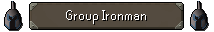 Standalone... together. Play Ironman Mode in a team of 2 - 5. While you can't trade with other players, you can trade within the group and have a space for shared storage. |
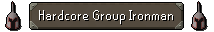 This combines the rules of GIM but with Hardcore Ironman. Rather than one life, you'll get a number equal to the number of people in your group... so be aware of your teammates! |
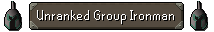 This mode gives you the ability to swap groups or invite new players in at any time. This flexibility comes with the cost of not being included on any HiScores. |
|
OSRS Wiki
Outside of this handy guide, we have one of the most passionate and community-driven playerbases there is. And that point stands at its peak with the OSRS Wiki, which we can comfortably say is one of the best Wikis ever made! We'll be constantly linking different pages from this wonderful resource so if there's anything you want to know more about - the Wiki's got you covered.
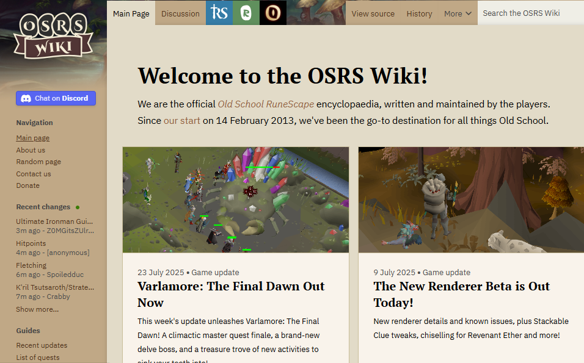

As an extra, in-game there's a handy little Wiki button next to the globe on the Minimap. You can either click this and manually search something, or click the Wiki button and then an object in your inventory or the game world to search for that specific object. This works for anything: Bosses, Items, Quest NPCs and more on the Wiki - popping out a page for you to peruse.
If you can't see the Wiki button, you can turn it on by searching 'Wiki' in the in-game settings menu. There's also a handy little Discord server if you want to get more involved with the fantastic people over there!
The Chatbox
This might seem like a smaller feature outside of everything else we've covered, but we promise it is VERY important. The chat interface at a base level looks exactly as it says on the tin: a place to type messages to the world, your friends or clans via the different tabs at the bottom.
In reality it's much more than that as not only will NPC dialogue appear here, but in-game messages will appear here that can notify you of anything from successfully lighting a fire, someone wanting to trade you or warning you of an incoming attack or effect.
|
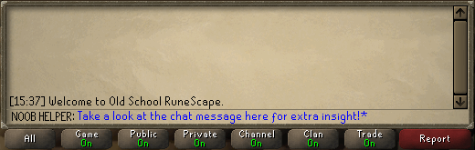 This is an overview of the interface and gives you a good idea of what you'll be looking at throughout your time in Gielinor! 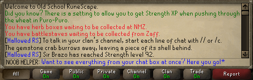 While you're here, you can use "/@x" to change what channel you are chatting into. Replacing the "x" with the following will let you chat in the appropriate channel: 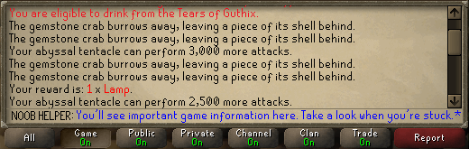 One of the most important chat functions is notifying you of in-game important information that can really help! Right-clicking this button will allow you to filter messages: 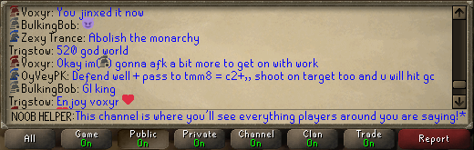 Right-clicking the public button allows you to filter what's shown. Some examples include FRIENDS, which only displays messages from friends or HIDE which will remove all messages. 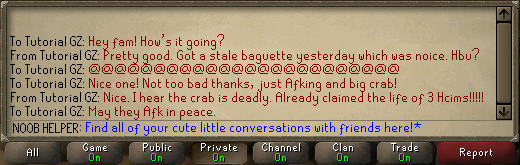 Here you can be shown private messages from players & messages you sent to players. Right-clicking this will give you options to filter who's messages are shown. 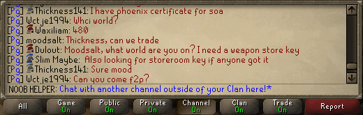 This channel is for you to see what's going on in a different Chat channel. You can join one by using the Chat-Channel tab (two smiley faces) and entering the name of the channel. 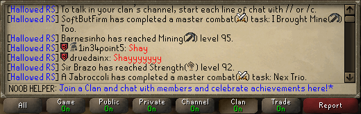 Like both Channel & Private, right-clicking here will give you filter options of ALL, FRIENDS, NONE and CLEAR HISTORY. 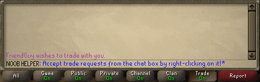 This is going to be very important if you want to be trading goods with other players. If you don't want to interact with the chat you can also accept a trade by right-clicking trade on that player. 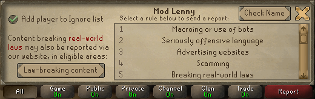 If you see anyone doing anything they shouldn't be, then you can use this button to report their misdeeds to Jagex Staff. Simply type their name in and select the rule they've broken. There's actually a good number of commands you can use for either handy features or funky text effects! |
32f7.png?a76b6)
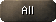
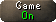
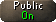
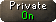
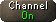
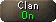
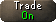
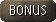
Click on each icon to find out more.
Minimap
First, let's already open up the world in a big way with the minimap. This handy section has a lot of key features that you'll want keep note of while journeying around Gielinor.
You'll see lots of little dots on the map and they represent different objects:
|
|
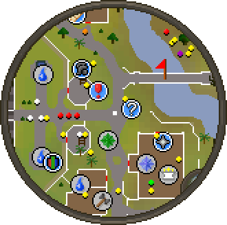 |
Most importantly, the minimap itself can be clicked on to move, so you can choose whether to use the game screen or minimap to venture. You can also zoom in and out of the minimap by using the scroll wheel, pinching on mobile or going into your settings and adjusting it manually.
World Map
Clicking on little globe (or using Ctrl+M) opens the World Map of Gielinor! There will be plenty of icons on the map but you can use the key on the left-hand side to help you understand what means what!
If you're looking for a big city or notable locations, you can use the search button at the bottom! As a little note: you can't click on the map to make your character move - it's either the minimap or game screen!
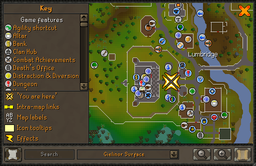
Here's some notable things to keep in mind with the Map:
Agility Shortcut |
Bank - |
General Store |
Dungeon - |
Magic Shop |
Quest - |
Task Master |
Transport - |
Clicking any item in the key will flash any icons on the map visible to you for easy locating. |
The text under the key such as: 'You are here' can be turned off by clicking them! |
||||||
If you're unsure where to go, you can use the 'Search' bar to find areas and cities! |
The drop-down menu gives you access to view other maps outside the mainland. |
||||||
Data Orbs
These handy dandy circles have some very vital information that can be easily tracked here.
Shows your current hitpoints. If this changes to another colour it means you're affected by a status condition: Poisoned, Venomed or Diseased!    |
||
A very important element for combat and a good way to track your Prayer as this displays your current Prayer points. |
||
A very important feature, this will show you how much energy you have to run across the world. Clicking this button will turn your run On or Off. |
||
Some weapons have special attacks and this will display how much Special Attack energy you have. |
Other Buttons
You can use the compass to get your bearings while navigating the world. You can also right-click for options to quickly adjust your map to face the cardinal compass directions. |
This pop-out button can be clicked to show your XP drops. You can right-click the button to setup how the drops are displayed visually and even set goals for yourself. |
A lightweight guidance tool that uses your current stats and quests to recommend more quests for you to complete that might help progress your account. |
A quick way to access the store to purchase Membership or Bonds. Right-clicking it will give you the option to open your Bond Pouch. Can be removed in Settings. |
This giant X found in the top-right is also another way to open the Logout Panel. If you're trying to log out on mobile, look for this imposing arch instead! |
Here's the Wiki Button! This will bring up the relevant Wiki page after clicking it and either typing in a word or clicking an object. |
Control Panel
Top Tip: You can click any Control Panel tab to open them in-game but you can also assign Hotkeys via the 'Control' options in your settings to easily open each tab with F-Keys!
|
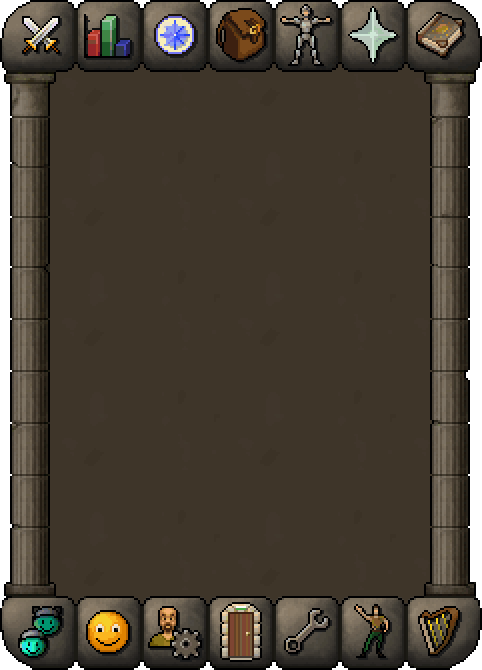 The key area of the interface, so we'll keep this straight to the point. The tabs here include: 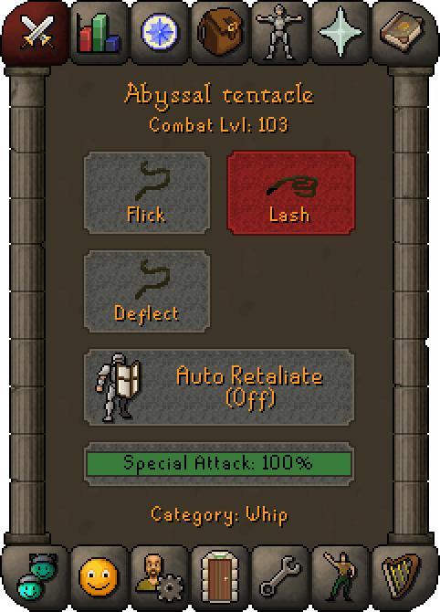 The Combat Options tab show different attack styles that a player uses in Combat, which in turn affects what experience they receive. 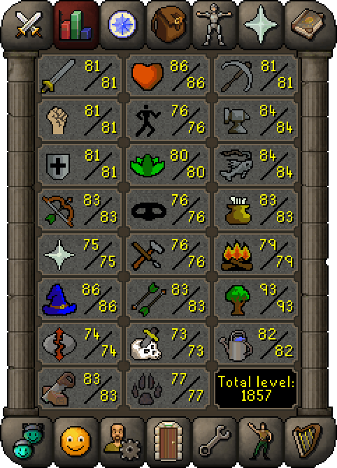 This panel showcases all of your Skills. One of the most important factors in the game as unlike other MMOs, you're not bound to training up a selected few. 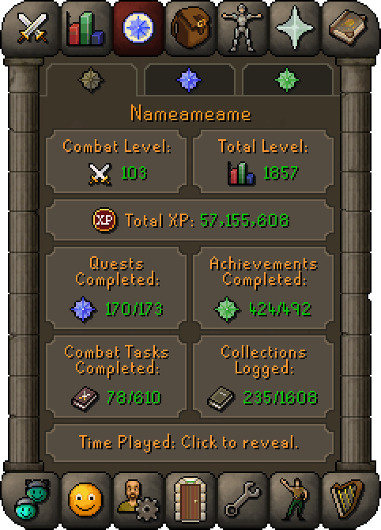 This tab gives you helpful information regarding your character and unlocks. 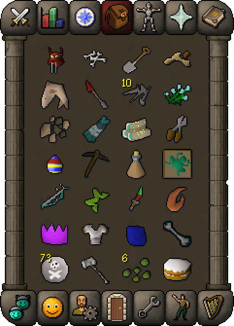 The inventory is where the player carries items that can't be or aren't equipped. 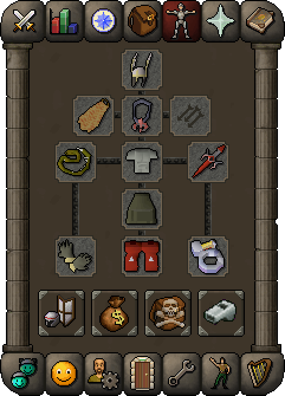 The Worn Equipment tab, shows all the equipment that the player is wearing or wielding, divided into 11 different slots. 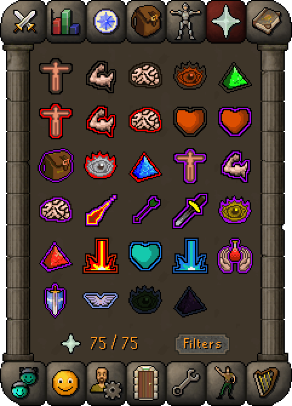 Prayers are unlocked as the level in the skill goes up. 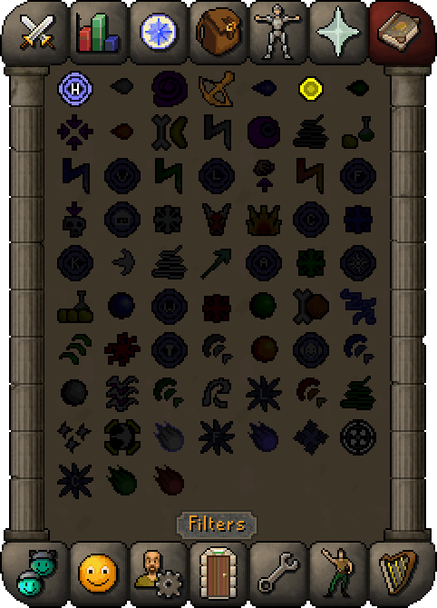 A spellbook is a list of magic spells available for casting to a player. 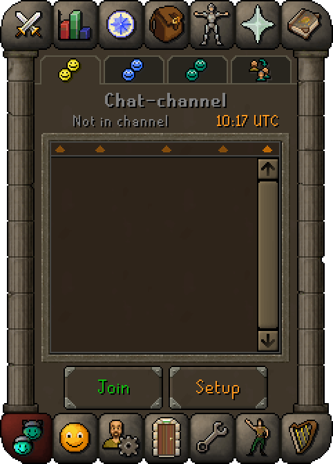 The Chat-channel tab is a feature in which players can chat with other players! 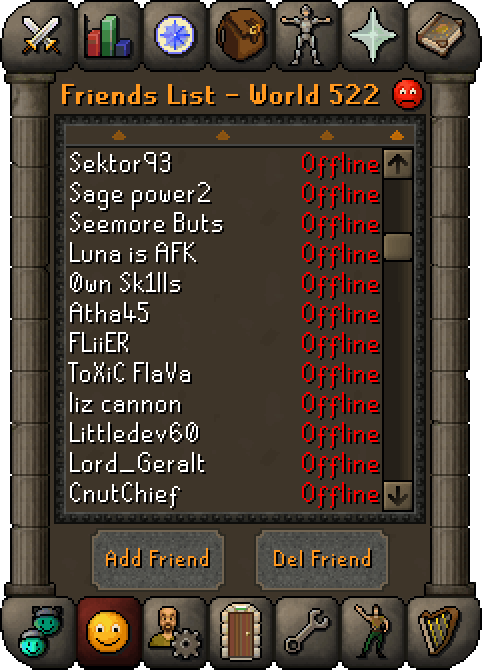 This tab can be used to send private messages to other players, and to see which worlds they are currently on. 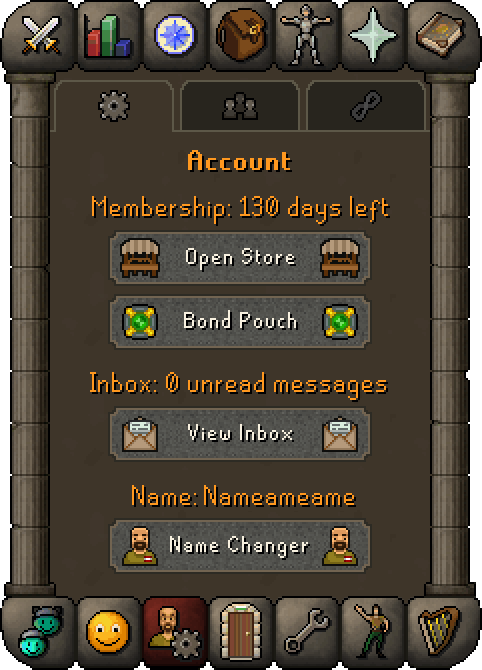 This area shows useful information regarding your account like inbox messages, membership and show links to different resources. 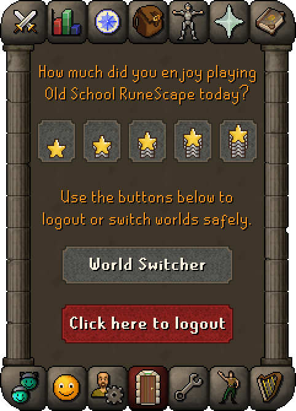 The Logout tab is used to end a session of OSRS, safely removing the player from the world. 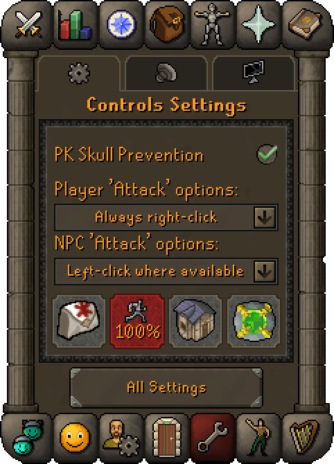 Settings is the screen that lets you change various settings (shocking), such as the brightness of the game client, whether or not chat effects display, whether to accept aid or not, the volume of the music and sound effects, and much more. 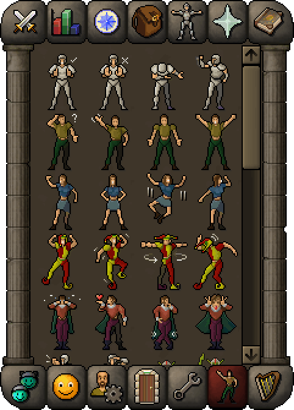 Emotes are a selection of movements that a player can perform. Some emotes are unlocked by default, to be unlocked through random events, quests and more. 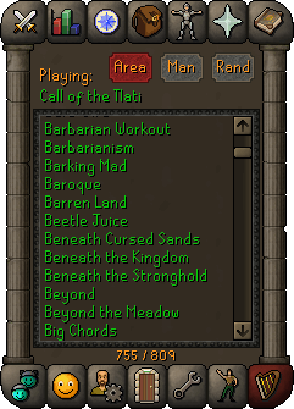 The Music Player tab displays what music theme is playing at the moment. The music is unlocked as you play the game and explore new places and contents. |


Click on each icon to find out more, or click on the Key icon at the left to see what each of the icons mean.
Recommended Settings
There's a few options in the settings we'd recommend changing to help with your overall experience.
Check them out for yourself to adjust them before playing, and remember that you can search for any settings in the menu.
Simply hold Shift, then left-click on an item to drop it, no right-click needed. |
ON |
Allows you to see inside buildings without being inside them. |
ON |
Lets you keybind F-Keys on keyboards to open up different tabs. |
PLAYER |
Lets the scroll wheel work for the camera zoom. |
ON |
Increases the Draw Distance. |
ON |
Keeps you from accidentally attacking in the Wilderness. |
ALWAYS |
Prevents you from attacking a player if that were to Skull you. |
ON |
Adjust the left-click option for interacting with NPCs. |
PLAYER |
The easiest way to move your camera around. |
ON |
Tweaks the colour and look to easily show when you deal your Max Hit. |
ON |
Get some nice popouts when you get a new item. |
ON |
Swaps to a modern style that can be moved and resized. |
ON |
Arrows picked up will be automatically equipped & Runes created will be sent straight into the Rune Pouch. |
ON |
Tips & Tricks
Let's give you some insightful advice on how to fully utilise everything that has been thrown at you thus far and hopefully make your adventure a little bit nicer!
This is probably the biggest piece of advice we can give everybody: It's going to let you move, attack, pick-up items, swap your gear, turn your Prayers on, move your camera, it can do everything - so put aside anything else your brain is telling you! |
The beauty about a lot of the grinds on Old School is that they can be done while doing something else. Unless you need to lock-in for a Quest, taking down a boss or completing an intense task, it's super easy to watch or play something while you grind certain activities. |
Within the Settings tab, under the Display minitab, you can change what your client UI looks like. Fixed Classic, will give you a small interface akin to playing back in 2007. The two Resizable layout give you two different versions with a wider screen, which you can resize freely. |
Use the Grouping minitab in the Chat-Channel tab to find a bunch of teleports you can use for free. These have a 30-minute cooldown once used. |
Use the Cog in the Quest tab to filter your Quests to sort by recommended, hide completed quests or change the colours of the different states. |
If you're ever in doubt of what to do in a Quest, click on the quest you're doing in the Quest tab to bring up the Quest Journal. |
You're able to check your Collection Log, Combat Tasks, Achievement Diaries and Quests by clicking on the boxes in the Character Summary tab. |
If you want to join a friend in a world, right-click their name in the Friends List tab and select 'Hop-to'. |
Emotes can be looped by right-clicking the Emote and selecting 'Loop'. |